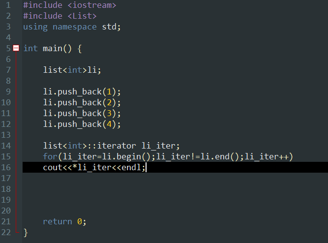
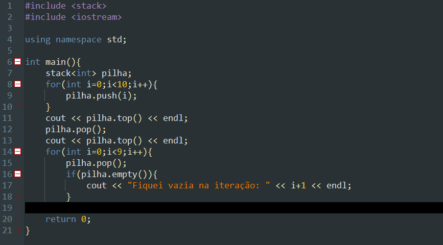
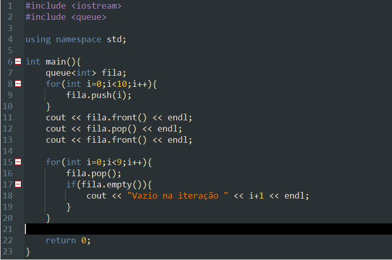

.png)
List, Stack e Queue C++
Listas,pilhas e filas são estruturas de dados que nos permitem organizar e interagir com nossos dados de várias maneiras. O C++ tem bibliotecas que nos permitem implementar esses tipos de estruturas , o que torna nossa tarefa mais fácil de fazer manualmente.
List:
A lista é uma estrutura mais abrangente porque podemos usá-la de várias maneiras, como em estilos de pilha e fila. Podemos adicionar um elemento ao inicio e ao fim de uma lista, bem como decidir se retirar o elemento do inicio ou do fim da lista! No entanto, podemos adicionar ou remover qualquer elemento de uma lista. Sua biblioteca está localizada no <list>.
Operações básicas:
- front() – Retorna o valor do primeiro elemento da lista.
- back() – Retorna o valor do último elemento da lista.
- push_front() – Adiciona um novo elemento 'n ' no início da lista.
- push_back() – Adiciona um novo elemento 'n' no final da lista.
- pop_front() – Remove o primeiro elemento da lista e reduz o tamanho da lista em 1.
- pop_back() – Remove o último elemento da lista e reduz o tamanho da lista em 1.
- insert() – Insere novos elementos na lista antes do elemento em uma posição especificada.
- size() – Retorna o número de elementos da lista.
- Begin() – a função Begin() retorna um iterador apontando para o primeiro elemento da lista.
- end() – a função end() retorna um iterador apontando para o último elemento teórico que segue o último elemento.
Exemplo:
O que é o iterator?
É o mecanismo usado para "andar", elemento por elemento, por uma coleção de dados. É uma forma abstrata e genérica de tratar o avanço entre os elementos dessa coleção. Esse avanço pode se dar de várias formas, inclusive ao contrário.
O funcionamento exato depende de cada tipo de dado, o importante é que se um tipo possui um iterador em conformidade com a linguagem toda operação que iteração poderá ser feita com aquele objeto. Não importa para ele a complexidade da operação, nem como ela deverá ser feita. É uma forma independente da implementação de acessar os dados da coleção.
Pilhas:
Em C++, a biblioteca <stack> é usada para usar a pilha. Após declararmos nossa "pilha", que especifica o tipo de dados que colocaremos nela, temos um for e uma função chamada push(). A função que nos permite empilhar nossos objetos em nossa pilha é a função push . Para aqueles que não sabem, uma pilha funciona de acordo com o padrão FILO, ou First in Last out, o que significa que o primeiro elemento entra e o último sai. Isso funciona como se os elementos estivessem empilhados um em cima do outro. Já a função pop() remove o elemento no topo da lista porém não retorna o seu valor.
Filas:
As funções da fila são semelhantes à pilha. Não há muitas diferenças significativas, mas o include passa de "stack" para "queue" e temos front(), em vez de top() na fila. A principal diferença é que ao usar top() na pilha, veríamos o ultimo elemento que foi adicionado, enquanto ao usar front() na fila, vemos o primeiro elemento e ao usar usar pop() o próximo elemento será o inteiro de valor 1. Sua biblioteca está localizada no <queue>.
Sobre Nós
Este blog é o seu companheiro essencial na jornada de aprendizado da programação. Nossa missão é ajudar novos programadores a desbravar o vasto universo da programação, oferecendo tutoriais, dicas e recursos práticos para tornar a programação acessível e empolgante. Junte-se a nós enquanto exploramos o mundo da tecnologia e transformamos aspirantes a programadores em mestres da arte de criar código.